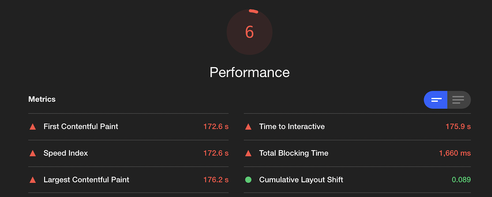
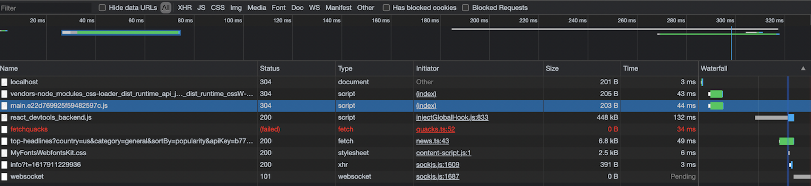

As I return to the tech world, I wanted to brush up on some skills while learning a few shiny new things on the way.
Introducing, quacker.My initial goals -- design a web app of sufficient complexity (Twitter clone), use React Router, webpack, and typescript. While I accomplished this, my main takeaway was tackling performance and gaining a deeper understanding of the elements at play. Some things we're complex, but a lot of this is low-hanging fruit that I hope you can apply in your projects and avoid some head-scratchers.
Done!
Or was I? I ran my project against Lighthouse and the assessment was not pretty...

I attempted to run npm run buildto see if I could at
least see what my build would look like compressed. However, the
command failed! I realized my webpack config was not configured
properly! I went on a webpack docs deepdive and pored through each
property of the webpack config. I noticed something in my config that
was off Within my output, I used the path dist to output
my bundle. Within my dev server config, I used the path
build to ref the bundle generated. Obviously, this
wouldn't work!
The fix here was simple: make sure I'm referencing the same directory
in both places (I chose dist)
I came across a nice tool called webpack-bundle-analyzer.
It generates a UI to view your bundle size and opportunities for
improvement. One glaring issue in my bundle was a few gargantuan third
party libraries, namely react-icons.
Obviously, WAY too big. I took all imports, centralized them in a single project file, then converged on a few choice icon libraries. I noticed I eliminated lots of duplicate imports and could avoid a lot of libraries not supporting module-based imports.
The result? Bundle size cut in half!
Any app with a smidge of complexity will be using dependencies. What
becomes obvious is that your code will, most likely, be changing more
often than dependencies. (You may be releasing once a week, while your
@types/... packages at far less frequency(if ever)).
Therefore, it makes sense to separate your code from your external
dependencies.
Webpack makes this very easy with the
optimization property. Take a look:
... optimization: { splitChunks: { chunks: "all" } }, ...
This gives us the ability to break down our single bundle into several.
Furthermore, pairing this with content hashes allows the browser to only re-download when a file content changes! The content hash only changes when they content of the data itself does. Referring back to our source vs dependencies...this allows the client to avoid a ton of superfluous network requests.
... filename: "[name].[contenthash].js", ...
The result? A cool 95% reduction in bundle size on subsequent page loads.
Syntax errors can be costly! (In my case, using both build and dist in config).
Webpack is extremely powerful and provides a ton of functionality. However, it does not come for free.
Furthermore, the browser can do a lot to provide an excellent UX, so let's make sure we're leveraging what's available. In this case, adding a content hash to our bundle chunks.